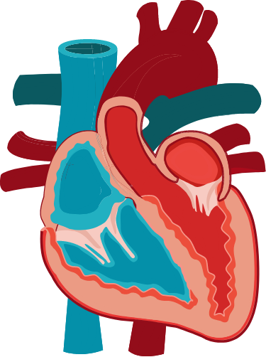

Working more than 40 hours a week may increase risk of high blood pressure, finds study of white-collar workers.

The Heart is Complicated
Finding out you have a heart problem can be overwhelimg
Here is where you can learn about your condition and help you understand your unique heart a little better.
The Heart is Complicated
Finding out you have a heart problem can be overwhelimg
Here is where you can learn about your condition and help you understand your unique heart a little better.
Deciding What's Right for You
If you have a heart condition, you may need to decide whether to have procedure on which medicine to take. ACC has tools to help you understand your options and choose what’s right for you.
Start Now
Deciding What's Right for You
If you have a heart condition, you may need to decide whether to have procedure on which medicine to take. ACC has tools to help you understand your options and choose what’s right for you.
Start Now
New on the site
Discover great materials to share with your patients
News Articles
-
Long Work Hours Linked to High Blood Pressure -
Long Work Hours Linked to High Blood Pressure Working more than 40 hours a week may increase risk of high blood pressure, finds study of white-collar workers. -
Long Work Hours Linked to High Blood Pressure Working more than 40 hours a week may increase risk of high blood pressure, finds study of white-collar workers. -
Long Work Hours Linked to High Blood Pressure Working more than 40 hours a week may increase risk of high blood pressure, finds study of white-collar workers.